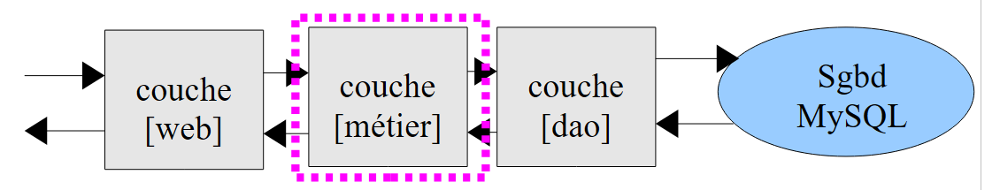
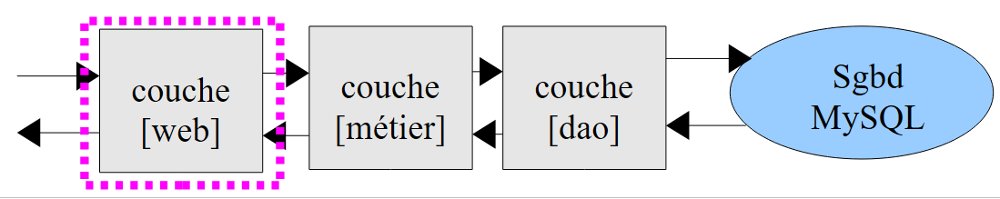

11. Exercice IMPOTS avec un service WEB et une architecture à trois couches
Nous allons reprendre l'exercice IMPOTS (cf paragraphes 4.2, 4.3, 6) et allons en faire une application client / serveur. Le script serveur sera décomposé en trois éléments :
- une couche appelée [dao] (Data Access Objects) qui s'occupera des échanges avec la base de données MySQL
- une couche appelée [métier] qui fera le calcul de l'impôt
- une couche [web] qui s'occupera des échanges avec les clients web.
 |
Le script client [1] :
- transmet au script serveur les trois informations ($marié, $enfants, $salaire) nécessaires au calcul de l'impôt
- affiche la réponse du serveur sur la console
Le script serveur [2] est constitué par la couche [web] du serveur.
- lors du début d'une nouvelle session client, il placera dans des tableaux les données de la base de données MySQL [dbimpots]. Pour cela, il fera appel à la couche [dao]. Les tableaux ainsi construits seront placés dans la session du client afin d'être utilisables dans les requêtes ultérieures du client.
- lors d'une requête client, il passera les trois informations ($marié, $enfants, $salaire) à la couche [métier] qui calculera l'impôt $impot.
- le script serveur renverra l'impôt $impôt calculé.
11.1. Le script client (clients_impots_05_web)
Le script client sera un client du service web de calcul de l'impôt. Il postera (POST) au serveur des paramètres sous la forme :
params=$marié,$enfants,$salaire où
- $marié sera la chaîne oui ou non,
- $enfants sera le nombre d'enfants,
- $salaire le salaire du contibuable
Il trouve les trois paramètres précédents dans un fichier texte [data.txt] sous la forme (marié, enfants, salaire) :
Le script client
- lira le fichier texte [data.txt] ligne par ligne
- postera la chaîne params=$marié,$enfants,$salaire au service web de calcul de l'impôt
- récupèrera la réponse du service. Celle-ci pourra avoir deux formes :
- enregistrera la réponse du serveur dans un fichier texte [resultats.txt] sous l'une des deux formessuivantes :
Le code du script client est le suivant :
<?php
// client impôts
// gestion des erreurs
ini_set("display_errors", "off");
// ---------------------------------------------------------------------------------
// une classe de fonctions utilitaires
class Utilitaires {
function cutNewLinechar($ligne) {
...
}
}
// main -----------------------------------------------------
// définition des constantes
$DATA = "data.txt";
$RESULTATS = "resultats.txt";
// données serveur
$HOTE = "localhost";
$PORT = 80;
$urlServeur = "/exemples-web/impots_05_web.php";
// les paramètres des personnes imposables (statut marital, nombre d'enfants, salaire annuel)
// ont été placés dans le fichier texte $DATA à raison d'une ligne par contribuable
// les résultats (statut marital, nombre d'enfants, salaire annuel, impôt à payer)
// ou (statut marital, nombre d'enfants, salaire annuel, msg d'erreur) sont placés dans
// le fichier texte $RESULTATS à raison d'un résultat par ligne
// classe Utilitaires
$u = new Utilitaires();
// ouverture fichier des données des contribuables
$data = fopen($DATA, "r");
if (!$data) {
print "Impossible d'ouvrir en lecture le fichier des données [$DATA]\n";
exit;
}
// ouverture fichier des résultats
$résultats = fopen($RESULTATS, "w");
if (!$résultats) {
print "Impossible de créer le fichier des résultats [$RESULTATS]\n";
exit;
}
// on exploite la ligne courante du fichier des données contribuables
while ($ligne = fgets($data, 100)) {
// on enlève l'éventuelle marque de fin de ligne
$ligne = $u->cutNewLineChar($ligne);
// on récupère les 3 champs marié:enfants:salaire qui forment $ligne
list($marié, $enfants, $salaire) = explode(",", $ligne);
// on calcule l'impôt
list($erreur, $impôt) = calculerImpot($HOTE, $PORT, $urlServeur, $cookie, array($marié, $enfants, $salaire));
// on inscrit le résultat
$résultat = $erreur ? "$marié:$enfants:$salaire:$erreur" : "$marié:$enfants:$salaire:$impôt";
fputs($résultats, "$résultat\n");
// donnée suivante
}
// on ferme les fichiers
fclose($data);
fclose($résultats);
// fin
print "Terminé...\n";
exit;
function calculerImpot($HOTE, $PORT, $urlServeur, &$cookie, $params) {
// connecte le client à ($HOTE,$PORT,$urlServeur)
// envoie le cookie $cookie si celui-ci est non vide. $cookie est passé par référence
// envoie $params au serveur
// exploite l'unique ligne renvoyée par le serveur
// ouverture d'une connexion sur le port 80 de $HOTE
$connexion = fsockopen($HOTE, $PORT);
// erreur ?
if (!$connexion)
return array("erreur lors de la connexion au serveur ($HOTE, $PORT)");
// les entêtes (headers) du protocole HTTP doivent se terminer par une ligne vide
// POST
fputs($connexion, "POST $urlServeur HTTP/1.1\n");
// Host
fputs($connexion, "Host: localhost\n");
// Connection
fputs($connexion, "Connection: close\n");
// on envoie le cookie s'il est non vide
if ($cookie) {
fputs($connexion, "Cookie: $cookie\n");
}//if
// maintenant on envoie l'instruction client après l'avoir encodée
$infos = "params=" . urlencode(implode(",", $params));
// on indique quel type d'informations on va envoyer
fputs($connexion, "Content-type: application/x-www-form-urlencoded\n");
// on envoie la taille (nombre de caractères) des infos qui vont être envoyées
fputs($connexion, "Content-length: " . strlen($infos) . "\n");
// on envoie une ligne vide
fputs($connexion, "\n");
// on envoie les infos
fputs($connexion, $infos);
// on affiche la réponse du serveur web
// et on prend soin de récupérer l'éventuel cookie
while ($ligne = fgets($connexion, 1000)) {
// cookie - seulement lors de la 1ère réponse
if (!$cookie) {
if (preg_match("/^Set-Cookie: (.*?)\s*$/", $ligne, $champs)) {
$cookie = $champs[1];
}//if
}
// dès qu'on a une ligne vide la réponse HTTP est terminée
if (trim($ligne) == "") {
break;
}
}//while
// lecture ligne du résultat
$ligne = fgets($connexion, 1000);
// on ferme la connexion
fclose($connexion);
// calcul résultat
$erreur="";
$impôt="";
if (preg_match("/^<erreur>(.*?)<\/erreur>\s*$/", $ligne, $champs)) {
$erreur = $champs[1];
} else {
if (preg_match("/^<impot>(.*?)<\/impot>\s*$/", $ligne, $champs)) {
$impôt = $champs[1];
}else{
$erreur="résultat du serveur non exploitable";
}
}
// retour
return array($erreur, $impôt);
}
Commentaires
Le code du script client reprend des choses déjà vues :
- lignes 9-15 : la classe [Utilitaires] a été présentée dans la version 3 paragraphe 6
- lignes 17-68 : le programme principal est analogue à celui de la version 1 paragraphe 4.2. Il n'en diffère que par le calcul de l'impôt, ligne 56.
- ligne 56 : la fonction de calcul de l'impôt admet les paramètres suivants :
- $HOTE, $PORT, $urlServeur : permettent de se connecter au service web
- $cookie : est le cookie de session. Ce paramètre est passé par référence. Sa valeur est fixée par la fonction de calcul de l'impôt. Lors du 1er appel, il n'a pas de valeur. Ensuite il en a une.
- array($marié, $enfants, $salaire) : représente une ligne du fichier [data.txt]
La fonction de calcul de l'impôt rend un tableau de deux résultats ($erreur, $impôt) où $erreur est un éventuel message d'erreur et $impôt le montant de l'impôt.
- lignes 70 – 134 : on a là un classique client Http comme nous en avons beaucoup rencontré. On notera les points suivants :
- ligne 83 : les paramètres ($marié, $enfants, $salaire) sont transmis au serveur par un POST
- lignes 89-91 : si le client a un identifiant de session, il l'envoie au serveur
- ligne 93 : création du paramètre params
- ligne 101 : envoi du paramètre params
- lignes 104-115 : le client lit tous les en-têtes Http envoyés par le serveur jusqu'à rencontrer la ligne vide de fin des en-têtes. Il en profite pour récupérer l'identifiant de session lors de la réponse à sa première demande.
- lignes 123-125 : on exploite une éventuelle ligne de la forme <erreur>message</erreur>
- lignes 126-128 : on fait de même avec une éventuelle ligne de la forme <impot>montant</impot>
- ligne 133 : on rend le résultat
11.2. Le service web de calcul de l'impôt
Nous nous intéressons ici aux trois scripts qui composent le serveur :
 |
Le projet Netbeans correspondant est le suivant :
 |
En [1], le serveur est formé des scripts PHP suivants :
- [impots_05_entites] contient les classes utilisées par le serveur
- [impots_05_dao] contient les classes et interfaces de la couche [dao]
- [impots_05_metier] contient les classes et interfaces de la couche [metier]
- [impots_05_web] contient les classes et interfaces de la couche [dao]
Nous commençons par présenter deux classes utilisées par les différentes couches du service web.
11.2.1. Les entités du service web (impots_05_entites)
La base MySQL [dbimpots] a une table [impots] qui contient les données nécessaires au calcul de l'impôt [1] :
 |
Nous stockerons les données de la table MySQL [impots] dans un tableau d'objets Tranche où Tranche est la classe suivante :
<?php
// une tranche d'impôt
class Tranche {
// champs privés
private $limite;
private $coeffR;
private $coeffN;
// getters et setters
public function getLimite() {
return $this->limite;
}
public function setLimite($limite) {
$this->limite = $limite;
}
public function getCoeffR() {
return $this->coeffR;
}
public function setCoeffR($coeffR) {
$this->coeffR = $coeffR;
}
public function getCoeffN() {
return $this->coeffN;
}
public function setCoeffN($coeffN) {
$this->coeffN = $coeffN;
}
// constructeur
public function __construct($limite, $coeffR, $coeffN) {
$this->setLimite($limite);
$this->setCoeffR($coeffR);
$this->setCoeffN($coeffN);
}
// toString
public function __toString(){
return "[$this->limite,$this->coeffR,$this->coeffN]";
}
}
Les champs privés [$limite, $coeffR, $coeffN] serviront à stocker les colonnes [limites, coeffR, coeffN] d'une ligne de la table MySQL [impots].
Par ailleurs, le code serveur utilisera une exception qui lui sera propre, la classe ImpotsException :
- ligne 1 : la classe [ImpotsException] dérive de la classe [Exception] prédéfinie dans PHP 5
- ligne 3 : le constructeur de la classe [ImpotsException] admet deux paramètres :
- $message : un message d'erreur
- $code : un code d'erreur
11.2.2. La couche [dao] (impots_05_dao)
La couche [dao] assure l'accès aux données de la base de données :
 |
La couche [dao] présente l'interface suivante :
L'interface IImpotsDao n'expose que la fonction getData. Cette fonction place dans un tableau d'objets Tranche, les différentes lignes de la table MySQL [dbimpots.impots].
La classe d'implémentation est la suivante :
<?php
// couche Dao
// dépendances
require_once "impots_05_entites.php";
// constantes
define("TABLE", "impots");
// -----------------------------------------------------------------
// implémentation abstraite
abstract class ImpotsDaoWithPdo implements IImpotsDao {
// champs privés
private $dsn;
private $user;
private $passwd;
private $tranches;
// getters et setters
public function getDsn() {
return $this->dsn;
}
public function setDsn($dsn) {
$this->dsn = $dsn;
}
public function getUser() {
return $this->user;
}
public function setUser($user) {
$this->user = $user;
}
public function getPasswd() {
return $this->passwd;
}
public function setPasswd($passwd) {
$this->passwd = $passwd;
}
// constructeur
public function __construct($dsn, $user, $passwd) {
// on enregistre les paramètres
$this->setDsn($dsn);
$this->setUser($user);
$this->setPasswd($passwd);
// on récupère les données du SGBD
// connecte ($user,$pwd) à la base $dsn
try {
// connexion
$connexion = new PDO($dsn, $user, $passwd, array(PDO::ATTR_PERSISTENT => true));
// lecture de la table $TABLE
$requête = "select limites,coeffR,coeffN from " . TABLE;
// exécute la requête $requête sur la connexion $connexion
$statement = $connexion->prepare($requête);
$statement->execute();
// exploitation du résultat de la requête
while ($colonnes = $statement->fetch()) {
$this->tranches[] = new Tranche($colonnes[0], $colonnes[1], $colonnes[2]);
}
// déconnexion
$connexion=NULL;
} catch (PDOException $e) {
// retour avec erreur
throw new ImpotsException($e->getMessage(), 1);
}
}
public function getData(){
return $this->tranches;
}
}
- ligne 5 : l'implémentation de l'interface [IImpotsDao] a besoin des classes définies dans le script [impots_05_entites].
- ligne 11 : définition d'une classe abstraite. Une classe abstraite est une classe qu'on ne peut instancier. Une classe abstraite doit être obligatoirement dérivée pour être instanciée. Une classe peut être déclarée abstraite parce qu'on ne peut pas l'instancier (certaines de ses méthodes ne sont pas définies) ou qu'on ne veut pas instancier. Ici, on ne veut pas instancier la classe [ImpotsDaoWithPdo]. On instanciera des classes dérivées.
- ligne 11 : la classe [ImpotsDaoWithPdo] implémente l'interface [IImpotsDao]. Elle doit donc définir la méthode getData. On trouve cette méthode lignes 72-74.
- ligne 14 : $dsn (Data Source Name) est une chaîne de caractères qui identifie de façon unique le SGBD et la base de données utilisée.
- ligne 15 : $user identifie l'utilisateur qui se connecte à la base de données
- ligne 16 : $passwd est le mot de passe de l'utilisateur précédent
- ligne 17 : $tranches est le tableau d'objets Tranche dans lequel on va mémoriser la table MySQL [dbimpots.impots].
- lignes 45-70 : le constructeur de la classe. Ce code a déjà été rencontré dans la version 4, paragraphe 8.2. On notera que la construction de l'objet [ImpotsDaoWithPdo] peut échouer. Une exception de type [ImpotsException] est alors lancée.
- lignes 72-74 : la méthode [getData] de l'interface [IImpotsDao].
La classe [ImpotsDaoWithPdo] convient à tout SGBD. Le constructeur de la classe, ligne 45, impose de connaître le Data Source Name de la base de données. Cette chaîne de caractères dépend du SGBD utilisé. On choisit de ne pas imposer à l'utilisateur de la classe de connaître ce Data Source Name. Pour chaque SGBD, il y aura une classe particulière dérivée de [ImpotsDaoWithPdo]. Pour le SGBD MySQL, ce sera la classe suivante :
class ImpotsDaoWithMySQL extends ImpotsDaoWithPdo {
public function __construct($host, $port, $base, $user, $passwd) {
parent::__construct("mysql:host=$host;dbname=$base;port=$port", $user, $passwd);
}
}
- ligne 3, le constructeur ne demande pas le Data Source Name, mais simplement le nom de la machine hôte du SGBD ($host), son port d'écoute ($port) et le nom de la base de données ($base).
- ligne 4, le Data Source Name de la base de données MySQL est construit et utilisé pour appeler le constructeur de la classe parente.
On notera que pour s'adapter à un autre SGBD, il suffit d'écrire la classe dérivée de [ImpotsDaoWithPdo] qui convient. Il s'agit à chaque fois de construire le Data Source Name propre au SGBD utilisé.
11.2.3. La couche [métier] (impots_05_metier)
La couche [metier] contient la logique du calcul de l'impôt :
 |
La couche [métier] présente l'interface suivante :
<?php
// interface metier
interface IImpotsMetier {
public function calculerImpot($marié, $enfants, $salaire);
}
L'interface [IImpotsMetier] n'expose qu'une méthode, la méthode [calculerImpot] qui permet de calculer l'impôt d'un contribuable à partir des paramètres suivants :
- $marié : chaîne oui / non selon que le contribuable est marié ou non
- $enfants : le nombre d'enfants du contribuable
- $salaire : son salaire
C'est la couche [web] qui lui fournira ces paramètres.
L'implémentation de l'interface [IImpotsMetier] est la suivante :
// dépendances
require_once "impots_05_dao.php";
// ------------------------------------------------------------------
// classe d'implémentation
class ImpotsMetier implements IImpotsMetier {
// couche dao
private $dao;
// tableau d'objets [Tranche]
private $data;
// getter et setter
public function getDao() {
return $this->dao;
}
public function setDao($dao) {
$this->dao = $dao;
}
public function setData($data){
$this->data=$data;
}
public function __construct($dao) {
// on récupère les données nécessaires au calcul de l'impôt
$this->setDao($dao);
$this->setData($this->dao->getData());
}
public function calculerImpot($marié, $enfants, $salaire) {
// $marié : oui, non
// $enfants : nombre d'enfants
// $salaire : salaire annuel
// nombre de parts
$marié = strtolower($marié);
if ($marié == "oui")
$nbParts = $enfants / 2 + 2;
else
$nbParts=$enfants / 2 + 1;
// une 1/2 part de plus si au moins 3 enfants
if ($enfants >= 3)
$nbParts+=0.5;
// revenu imposable
$revenuImposable = 0.72 * $salaire;
// quotient familial
$quotient = $revenuImposable / $nbParts;
// est mis à la fin du tableau limites pour arrêter la boucle qui suit
$N = count($this->data);
$this->data[$N - 1]->setLimite($quotient);
// calcul de l'impôt
$i = 0;
while ($i < $N and $quotient > $this->data[$i]->getLimite()) {
$i++;
}
// du fait qu'on a placé $quotient à la fin du tableau $limites, la boucle précédente
// ne peut déborder du tableau $limites
// maintenant on peut calculer l'impôt
return floor($revenuImposable * $this->data[$i]->getCoeffR() - $nbParts * $this->data[$i]->getCoeffN());
}
}
- ligne 2 : la couche [métier] a besoin des classes de la couche [dao] et des entités (Tranche, ImpotsException).
- ligne 6 : la classe [ImpotsMetier] implémente l'interface [IimpotsMetier].
- lignes 9-11 : les champs privés de la classe :
- $dao : référence sur la couche [dao]
- $data : tableau d'objets de type [Tranche] fourni par la couche [dao]
- lignes 26-30 : le constructeur de la classe initialise les deux champs précédents. Il reçoit comme paramètre une référence sur la couche [dao].
- lignes 32-61 : implémentation de la méthode [calculerImpot] de l'interface [IimpotsMetier]. Cette méthode a été rencontrée dès la version 1 (paragraphe 4.2).
11.2.4. La couche [web] (impots_05_web)
La couche [metier] contient la logique du calcul de l'impôt :
 |
La couche [web] est constitué du service web qui répond aux clients web. On rappelle que ceux-ci font une demande au service web en postant le paramètre suivant : params=marié,enfants,salaire. On a affaire à un service web tel que nous avons pu les construire dans les paragraphes précédents. Son code est le suivant :
<?php
// couche métier
require_once "impots_05_metier.php";
// gestion des erreurs
ini_set("display_errors", "off");
// entête UTF-8
header("Content-Type: text/plain; charset=utf-8");
// ------------------------------------------------------------------------------
// le service web des impôts
// définition des constantes
$HOTE = "localhost";
$PORT = 3306;
$BASE = "dbimpots";
$USER = "root";
$PWD = "";
// les données nécessaires au calcul de l'impôt ont été placées dans la table mysql IMPOTS
// appartenant à la base $BASE. La table a la structure suivante
// limites decimal(10,2), coeffR decimal(6,2), coeffN decimal(10,2)
// les paramètres des personnes imposables (statut marital, nombre d'enfants, salaire annuel)
// sont envoyés par le client sous la forme params=statut marital, nombre d'enfants, salaire annuel
// les résultats (statut marital, nombre d'enfants, salaire annuel, impôt à payer) sont renvoyés au client
// sous la forme <impot>impot</impot>
// ou sous la forme <erreur>erreur</erreur>, si les paramètres sont invalides
// on récupère la couche [métier] dans la session
session_start();
if (!isset($_SESSION['metier'])) {
// instanciation de la couche [dao] et de la couche [métier]
try {
$_SESSION['metier'] = new ImpotsMetier(new ImpotsDaoWithMySQL($HOTE, $PORT, $BASE, $USER, $PWD));
} catch (ImpotsException $ie) {
print "<erreur>Erreur : " . utf8_encode($ie->getMessage() . "</erreur>");
exit;
}
}
$metier = $_SESSION['metier'];
// on récupère la ligne envoyée par le client
$params = utf8_encode(htmlspecialchars(strtolower(trim($_POST['params']))));
$items = explode(",", $params);
// il ne doit y avoir que 3 paramètres
if (count($items) != 3) {
print "<erreur>[$params] : nombre de paramètres invalides</erreur>\n";
exit;
}//if
// le premier paramètre (statut marital) doit être oui/non
$marié = trim($items[0]);
if ($marié != "oui" and $marié != "non") {
print "<erreur>[$params] : 1er paramètre invalide</erreur>\n";
exit;
}//if
// le second paramètre (nbre d'enfants) doit être un nombre entier
if (!preg_match("/^\s*(\d+)\s*$/", $items[1], $champs)) {
print "<erreur>[$params] : 2ième paramètre invalide</erreur>\n";
exit;
}//if
$enfants = $champs[1];
// le troisième paramètre (salaire) doit être un nombre entier
if (!preg_match("/^\s*(\d+)\s*$/", $items[2], $champs)) {
print "<erreur>[$params] : 3ième paramètre invalide</erreur>\n";
exit;
}//if
$salaire = $champs[1];
// on calcule l'impôt
$impôt = $metier->calculerImpot($marié, $enfants, $salaire);
// on renvoie le résultat
print "<impot>$impôt</impot>\n";
// fin
exit;
- ligne 4 : la couche [web] a besoin des classes de la couche [métier]
- lignes 30-40 : la référence sur la couche [métier] est mise en session. Si on se rappelle que cette couche [métier] a une référence sur la couche [dao] et que cette dernière mémorise les données du SGBD, on comprend alors :
- que la 1ère requête du client va provoquer un accès au SGBD
- que les requêtes suivantes du même client vont utiliser les données mémorisées par la couche [dao]. Il n'y a donc pas d'accès au SGBD.
- ligne 34 : construction d'une couche [métier] travaillant avec une couche [dao] implémentée pour le SGBD MySQL
- lignes 35-37 : gestion d'une éventuelle erreur dans l'opération précédente. Dans ce cas, une ligne <erreur>message</erreur> est envoyé au client.
- ligne 43 : on récupère le paramètre 'params' qui a été posté par le client.
- lignes 46-49 : on vérifie le nombre d'informations trouvées dans 'params'
- lignes 51-55 : on vérifie la validité de la 1ère information
- lignes 56-60 : idem pour la 2ième
- lignes 62-66 : idem pour la 3ième
- ligne 69 : c'est la couche [métier] qui calcule l'impôt.
- ligne 71 : envoi du résultat au client
Résultats
On se rappelle que le client [client_impots_web_05] exploite le fichier [data.txt] suivant :
A partir de ces lignes (marié, enfants, salaire), le client interroge le serveur de calcul d'impôt et inscrit les résultats dans le fichier texte [resultats.txt]. Après exécution du client, le contenu de ce fichier est le suivant :
oui:2:200000:22504
non:2:200000:33388
oui:3:200000:16400
non:3:200000:22504
oui:5:50000:0
non:0:3000000:1354938
où chaque ligne est de la forme (marié, enfants, salaire, impôt calculé).